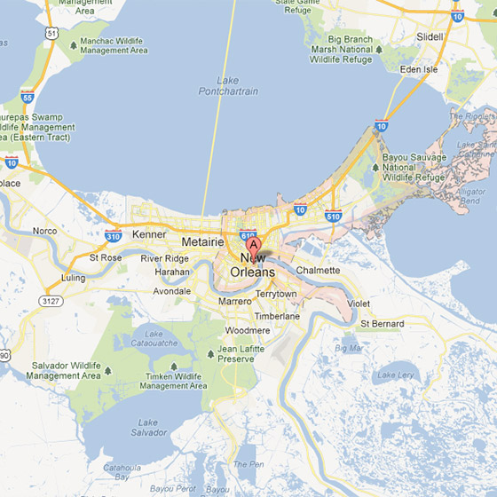
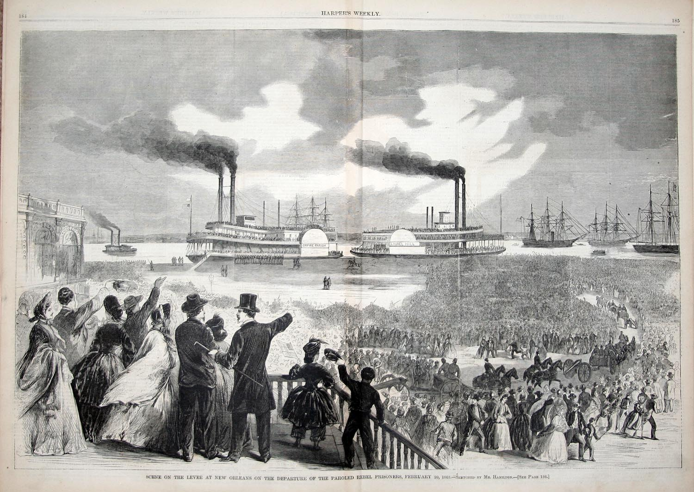
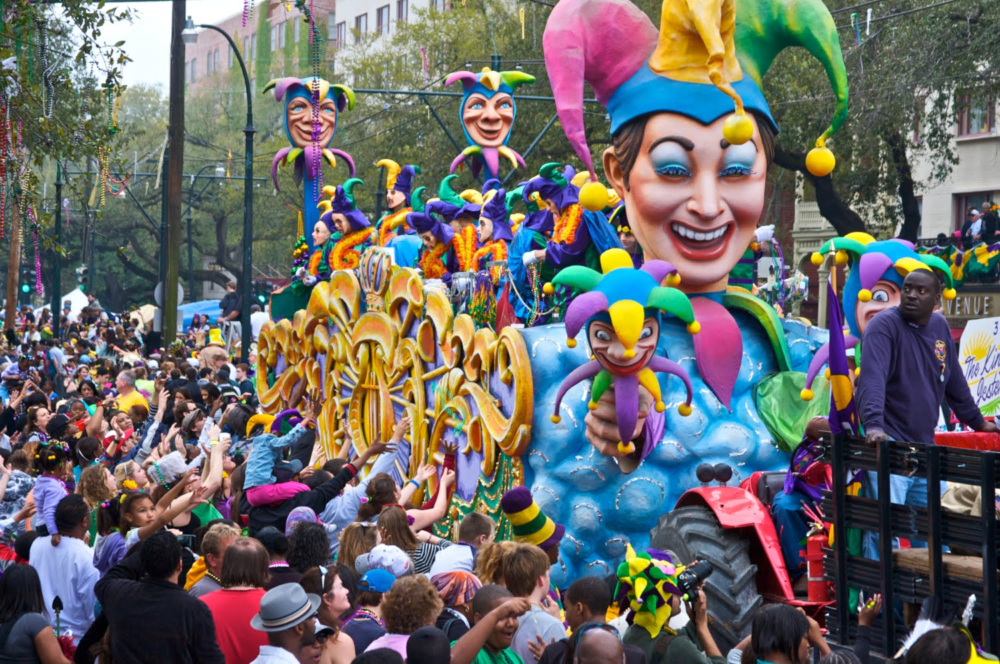
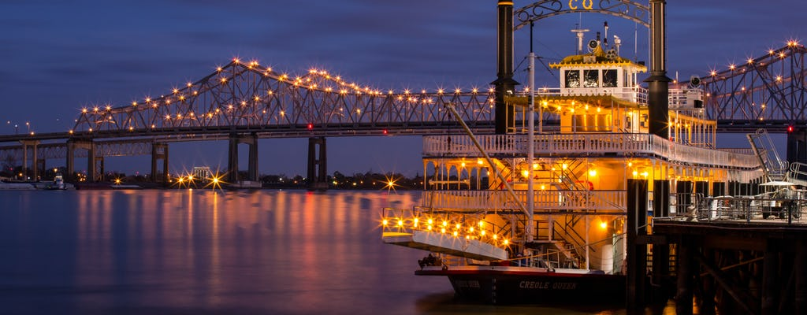
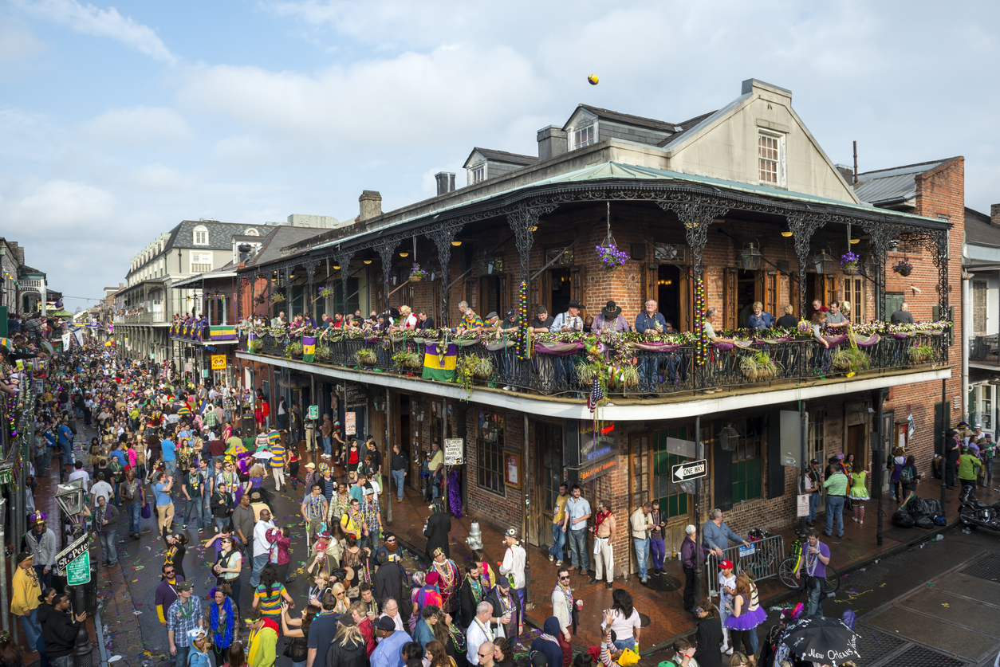

Location
New Orleans, Louisiana, USA
New Orleans is a Louisiana city on the Mississippi River, near the Gulf of Mexico. Nicknamed the "Big Easy," it's known for its round-the-clock nightlife, vibrant live-music scene and spicy, singular cuisine reflecting its history as a melting pot of French, African and American cultures. Embodying its festive spirit is Mardi Gras, the late-winter carnival famed for raucous costumed parades and street parties.
Demographics
| 1940-1950 | +1.44 %/year |
| 1950-1960 | +0.96 %/year |
| 1960-1970 | -0.56 %/year |
| 1970-1980 | -0.62 %/year |
| 1980-1990 | -1.15 %/year |
| 1990-2000 | -0.25 %/year |
| 2000-2010 | -3.38 %/year |
| 2010-2014 | +2.82 %/year |
Source: population.city
History of the Population
Situated on a bend of the Mississippi River 100 miles from its mouth, New Orleans has been the chief city of Louisiana and the Gulf of Mexico’s busiest northern port since the early 1700s. Founded by the French, ruled for 40 years by the Spanish and bought by the United States in the 1803 Louisiana Purchase, New Orleans is known for its distinct Creole culture and vibrant history. Significant battles of the War of 1812 and the Civil War were fought over the city. In its last hundred years the key struggles of New Orleans have been social (poverty, racial strife) and natural (hurricanes, floods and slowly sinking land).
Culture and Attractions
Culture
Unquestionably one of the most distinctive cities of the New World, the peoples of New Orleans evolved a unique culture and society, while at the same time blending many heritages such as African American, French and North American. Its citizens of African descent provided a special contribution in making New Orleans the birthplace of jazz. New Orleans is a city of paradox and contrast: while it shares the urban problems afflicting other U.S. cities, it has nevertheless preserved an exuberant and uninhibited spirit, perhaps best exemplified by its Carnival season, which culminates in the famous annual Mardi Gras, when more than a million people throng the streets.
Attractions
From historic homes and streetcar rides to above-ground cemeteries and world-class museums like the National World War II Museum, the opportunities for exploration in New Orleans are truly endless. Whether you're an art aficionado, a history buff, or just looking to experience the city's rich history and culture on a deeper level, you'll find a variety of attractions that are sure to pique your interest.
Economy
Tourism the Driving Force!
The New Orleans economy is dominated by four major sectors: oil/gas and related activities, tourism, the port and ship/boat building, and aerospace manufacturing. The presence of universities, hospitals, legal/accounting and other professional services, together with key installations of the U.S. Navy and other military operations in the region adds further to its diversified economic base. Tourism continues to be the driving force of New Orleans' economy. Boasting attractions such as its magnetic French Quarter, America's largest Mardis Gras festival, and river-boat gambling, New Orleans has a history of solid tourist trade. In a city with more than 10 million visitors annually, the hospitality business supplies more than 66,000 jobs in the service sector such as accommodations and restaurants. In 2004, tourists spent $4.9 billion in New Orleans.
Source: http://www.city-data.com/us-cities/The-South/New-Orleans-Economy.html